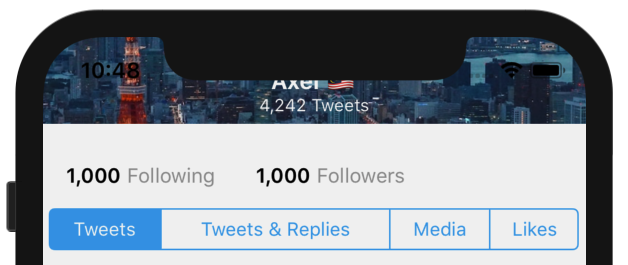
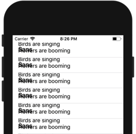
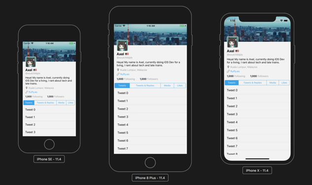
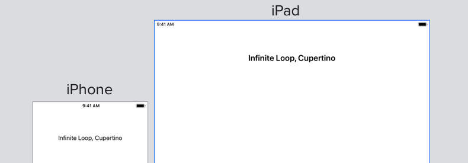
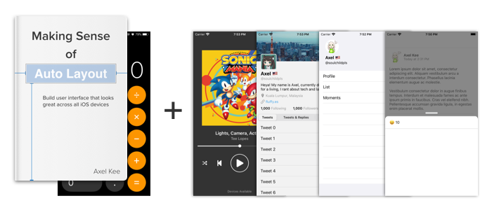
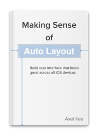
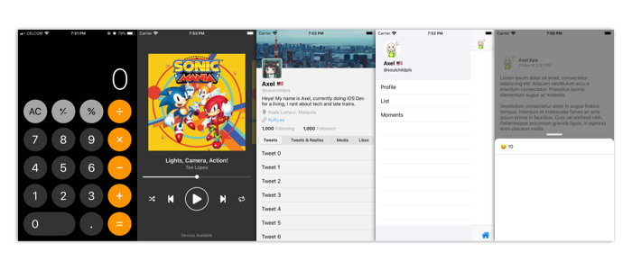

Do these sounds familiar?
- Adding and removing constraint and hoping it to work when pressing the ▶️ button
- Kept running into conflicting constraints error over and over again
- Xcode told you to change Content Hugging and Content Compression Resistance priorities, but what are these?
- Finally got it working on your iPhone, but when you view it on iPhone SE, the layout doesn't fit (and you secretly curse Apple for still supporting iPhone SE)
- Finally got it working on your iPhone, but when you view it on iPhone X, the text got clipped by the notch

Adding constraints pretty much feel like guesswork at this point :
- Add constraint
- Run the app
- Tweak the number value of the constraint
- Run the app
- Add more constraint
- Run the app
- Delete all constraints and start again
You are interested to create an iOS app, you picked up Swift and enjoyed learning it, you managed to create some simple app after following tutorials. But when it comes to designing user interface, Auto Layout doesn't make sense to you, it feels like you have to get lucky to get a layout working.
Months of coding work feels wasted as you can’t even get the user interface to display correctly. At this point, you are asking yourself whether it is a good choice to continue iOS programming, as spending the time to fight with Auto Layout doesn't feel worth it anymore.
Perhaps you have decided to grind through the Auto Layout maze, and finally managed to make a layout that looks good (yay!), but when you view it on another device with different screen size, Labels and images are overlapping each other or there is a big area of blank space.

Now you feel stuck, as changing the current constraints will break the layout on your current device, but if you don't change it, it doesn't fit on other devices.
"Auto Layout shouldn't be that hard! Is it too much to ask for a layout that works across different devices?!", I heard you. Let's take a moment and imagine the following :
What if you are able to create user interfaces which look great on any screen size? What app would you like to build?
What if you knew exactly which constraint to add for each element? You could save hours from trial and error-ing constraints. You’d know how to troubleshoot constraints whenever your layout looks off from their supposed position. You’d be confident that your app will look exactly like how you want it in all iPhones and iPads. You could finish the app that you have been working on for months, submit it to the App Store, and have a better resume for applying iOS developer positions.

Learn the fundamentals of Auto Layout and create constraint confidently
The problem with Auto Layout is that winging it as you go along is not an option. With coding you often can trial and error until it works, so we are used to it. Auto Layout needs to be properly understood and applied systematically, you have to understand what every single constraint is doing, throwing them in at random until its all blue is never going to work.
Making Sense of Auto Layout focuses on the fundamentals of Auto Layout including how it decides the position and size of a UI Element (UIView, UILabel etc), what problems do Auto Layout solve, why do Xcode shows you red lines and how to troubleshoot them. Understanding the fundamental of Auto Layout can save you from bruteforcing constraints to make something work, as you can predict how it works and confidently place constraints.
Create layout with dynamic content at ease
Most of the time your app will communicate with a web API that returns JSON content, you can confidently create a layout that cater to dynamic content using Self-sizing table view cells or Scroll views with dynamic height.
By using the help of Stack views, you can add/remove UI element easily into the stack without having to add constraints all over again.
Leverage Size Class to create layout that looks good on different orientation and screen size
As the range of devices has increased over the last few years (iPhone 4", 4.7", 5.5", iPad Mini, Pro etc) and split screen mode in iPad is introduced, designing layout that caters for different screen resolution has become more challenging and almost impossible to specifically design layout for each possible screen size.
To simplify the process of designing layout that adapts to different screen size, Apple has introduced Size Classes in iOS 8, size classes categorizes different devices using width and height into 4 variants:
- Compact Width, Compact Height
- Compact Width, Regular Height
- Regular Width, Compact Height
- Regular Width, Regular Height
Using size classes, we can assign different constraint or even attribute of an UI element when viewed in different device easily :

Learn the fundamentals of Auto Layout with
Making Sense Of Auto Layout Book
Start creating the layout you want, looks good across all iOS devices, and submit it to App Store confidently.
What's in the book?
Instead of showing you a specific complex layout to follow step by step, this book breaks down and explain the fundamentals of Auto Layout and let you connect the dots before you start designing your own layout. This book is focused on doing Auto Layout using Interface Builder (Xcode GUI), but its core concept can be applied to doing it programmatically (using code) as well.
- How User Interface is being designed prior to Auto Layout and why Auto Layout is introduced
- How Auto Layout determine position and size of a UI Element by using constraints you defined
- Why missing constraints (Red lines!) appear and how to solve them
- Why conflicting constraints (Red lines, with numbers!) happen and how to solve them
- What is intrinsic content size and the importance of it
- Using Tableview for content with dynamic size
- Using Scrollview for content with dynamic size
- What is constraint priority and when to use it
- What is content hugging and compression resistance
- What is Stackview and how does it simplify constraints
- Animating views with constraint
- What is Size Classes and how to use it to create adaptive layout
- Thinking in proportion
- Calculator app design case study (Apply all the auto layout knowledge you learned in this book to replicate iOS default calculator app!)
By the end of the book, you would be equipped with the ability to build this :
The Book + Case Studies

- The book in PDF and ePub format, 215 pages
- ~ 2-6 hours of reading depending on your speed, and you can start apply the knowledge after chapter 4
- 6 practice Xcode projects (Xcode 11+) to follow-along the chapters
- Future updates on the book, if available
- Xcode project of the completed calculator app, so you can compare it to your own work
- 4 case studies (Spotify's Now Playing UI, Twitter Profile UI, Twitter Slide Menu, Facebook Card UI)
- Explanation of each constraints used for replicating the UI in the case studies, and also breakdown of components in the UI
- Completed demo Xcode projects for the Spotify / Twitter Profile UI / Twitter Slide Menu / Facebook Card UI :
With the case studies, you'll learn how to breakdown complex UI in other apps into individual components and implement them methodically. You would be able to apply the Auto Layout concept you learned in the book into implementing real layout you saw in other apps.
Just the Book

- The book in PDF and ePub format, 215 pages
- ~ 2-6 hours of reading depending on your speed, and you can start apply the knowledge after chapter 4
- 6 practice Xcode projects (Xcode 11+) to follow-along the chapters
- Future updates on the book, if available
Xcode project of the completed calculator app, so you can compare it to your own work4 case studies (Spotify's Now Playing UI, Twitter Profile UI, Twitter Slide Menu, Facebook Card UI)Explanation of each constraints used for replicating the UI in the case studies, and also breakdown of components in the UICompleted demo Xcode projects for the Spotify / Twitter Profile UI / Twitter Slide Menu / Facebook Card UI
Just the Case Studies

- 4 case studies (Spotify's Now Playing UI, Twitter Profile UI, Twitter Slide Menu, Calculator app)
- Explanation of each constraints used for replicating the UI in the case studies, and also breakdown of components in the UI
- Completed demo Xcode projects for the Spotify / Twitter Profile UI / Twitter Slide Menu / Calculator
- Compatible with Xcode 11+
Testimonials
“dude… wow… good job on this Auto Layout series! One of the best explanations I’ve read!”
– Alex Kluew
“I find the book a comprehensive break-down of the basics of Auto Layout, it's definitely a valuable resource for newcomers to iOS development”
– Adrian Tineo
Can I try a free sample?
Absolutely! Grab your free sample below and start Making Sense of Auto Layout today.
Frequently Asked Questions
Q: Which programming language will the book use?
The book will use Swift 4 for code samples, although majority of the book focuses on interface builder (without code).
Q: How do I know if Making Sense of Auto Layout is suitable for me?
Making Sense of Auto Layout is for iOS Developer who struggle to understand Auto Layout and how constraints work. This book is written with the motivation of aiding beginner iOS developer to gain an understanding of how Auto Layout and constraints works and why Apple designed this way. The book is not about super-complex layout with a step-by-step guide, it is about understanding basics of Auto Layout and constraints.
If you already can implement a responsive user interface using constraints by yourself, and understand how it works, this might not be for you.
Q: Will SwiftUI replace UIKit and Auto Layout in the future?
Most probably no, it might be widely adapted in the future but there will still be significant amount of iOS / macOS projects still using UIKit and Auto Layout. Even though Swift is version 5 now, there's still quite some companies writing their app using Objective-C as it doesn't make financial sense for them to switch and probably because of interoperability with C++ / C API. Bottomline is, you won't automatically get disqualified from iOS jobs because you didn't learn SwiftUI, but you would definitely get questioned if you don't know about basic Auto Layout concepts.
As SwiftUI is built on top of UIKit / AppKit components such as table view, navigation etc, it definitely would be useful to have knowledge on UIKit before diving into SwiftUI. SwiftUI code uses HStack, VStack and .padding() frequently and these concepts are taken from Auto Layout's StackView and constraint as well, learning Auto Layout beforehand would make learning SwiftUI easier as well.
Guarantee
If using this book does not help you learn and understand Auto Layout, let me know, within 30 Days of the date of your purchase, and I'll give you a complete refund. No argument. No risk. 100% guaranteed. You can contact me at axel@fluffy.es
Have other questions? Contact me at
axel@fluffy.es, I'll be happy to answer.
About the Author
Hi, I'm Axel Kee. I’ve been developing iOS apps for companies, clients and myself — from small indie app (they cover my daily coffee money ☕️) to social app that get hundreds of thousands of downloads — since 2016.
I used to struggle on Auto Layout when I first started picking up iOS development, it took me a lot of practice until it 'clicks' for me. Once I understand the intention behind Auto Layout and how it works, I come to appreciate it as it simplifies UI development a lot.
I hope this book can make it 'click' for you too.
I write about iOS development stuff here.